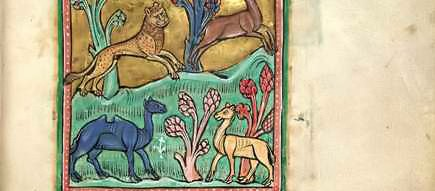

MONSTER
El terror monster se centra en criaturas aterradoras y seres mitológicos que desafían la comprensión humana. Es uno de los subgéneros más populares por su capacidad para inspirar miedo y fascinación.

Obra: Bestiarios medievales
Ilustraciones de criaturas como grifos, dragones y quimeras que combinan animales reales e imaginarios en los manuscritos medievales.

Obra: Cerbero
El guardián del inframundo, ha sido representado en el arte clásico como una bestia de múltiples cabezas que impide la salida de los muertos del Hades.

Obra: Monstruos marinos (Kraken)
Grabados antiguos muestran enormes criaturas marinas atacando barcos, inspiradas en leyendas nórdicas del Kraken.

Obra: Dragones medievales
Los dragones aparecen en códices y tapices como bestias aladas que representan el caos y la amenaza sobrenatural.